De patria a patria
Un viaje épico de Kentucky a Burundi pasando por Gales y Ucrania
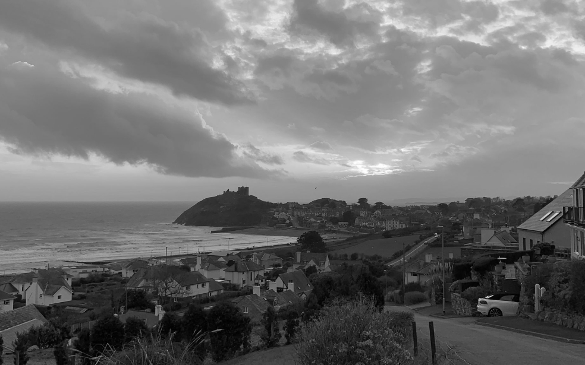
Conoce un poco mejor los lugares de los que proceden tus colegas en línea
Todo ser humano es un artista, un ser de la libertad, llamado a participar en la transformación y reforma de las condiciones, el pensamiento y las estructuras que conforman e influyen en nuestras vidas.
-- Joseph Beuys
La ciudad de TripleTen ha reunido a profesionales de diferentes rincones del mundo. Hoy, la Galería de Arte TripleTen se enorgullece de presentar historias y fotografías de algunas de las personas que dedican su tiempo y esfuerzo a hacer que los futuros profesionales de la tecnología de esta ciudad se sientan como en casa. Cada uno de nosotros tiene una historia única sobre el lugar del que procede. No dudes en añadir a nuestra colección tu propia historia y una obra de arte visual dedicada a tu ciudad natal. No importa de dónde seas, nos alegra que seas nuestro vecino.
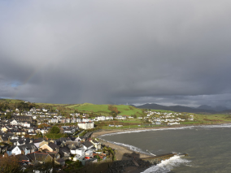
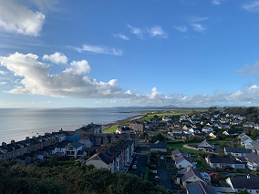
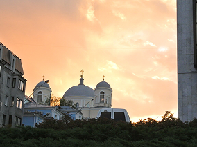
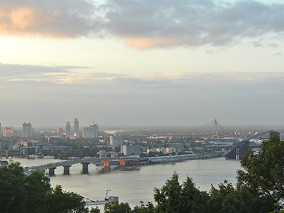
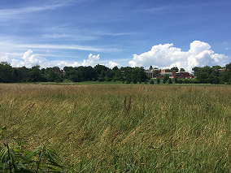
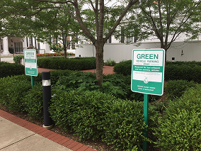
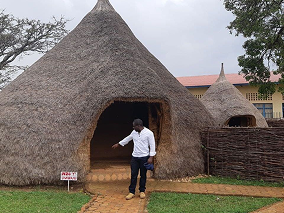
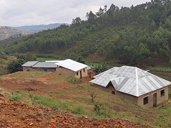
Cricieth, Gales
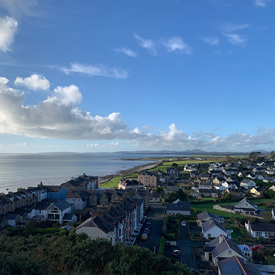
ARTISTAS
Steffan Warren, editor jefe
Kseniya Glagoleva, gerente de proyectos
Las ruinas medievales del castillo de Cricieth dominan la ciudad
desde una roca que extiende sobre el mar. Se cree que fue
construido por Llewelyn el Grande en el S. XIII. 800 años
después, la autodenominada Perla de Gales en las costas de
Snowdonia, se ha convertido en un popular destino turístico
durante los meses de verano.
A pocos pasos de camino al
castillo, puedes disfrutar de los mejores helados del mundo en
Cadwalader's, cuyo ingrediente secreto se rumorea que son algas
marinas de la localidad. Otra cosa por la que es famosa Cricieth
es por haber ganado el premio *Gales en flor* durante cinco años
seguidos por sus espectaculares muestras florales alrededor de
la ciudad. También vio nacer a David Lloyd George, el único
galés que ha sido Primer Ministro del Reino Unido.
Berea, EE. UU.
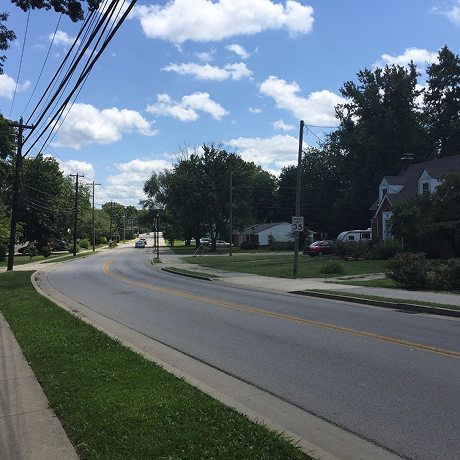
ARTISTAS
Travis Turner, autor y editor
Berea es una pequeña ciudad ubicada en la parte central de
Kentucky. La ciudad está rodeada por hermosos bosques y campos.
Es conocida como la capital de la artesanía del estado, y sus
visitantes hallarán infinitas posibilidades para ir de compras:
tiendas de joyas, velas y artículos de madera artesanales;
galerías, talleres de vidrio y más. La ciudad celebra un
festival anual que rinde tributo al "spoonbread", un platillo
local hecho de pan de maíz y que se sirve con una cuchara de
madera.
Aunque, probablemente es mejor conocida por su universidad. El
Berea College fue fundado en 1855 y fue la primera universidad
sureña integrada racialmente, así como la primera en ser
coeducacional. Algo que en cierta manera la hace única, es que
no cobra colegiatura: cada estudiante recibe una beca del 100%.
Muramvya, Burundi
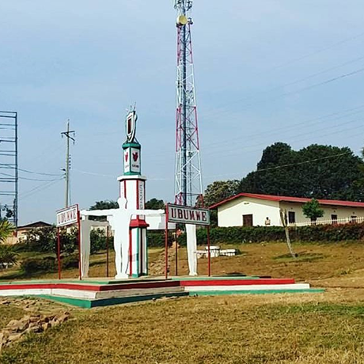
ARTISTAS
Grevisse Kenguruka, editor técnico
Muramvya es una de las 18 provincias de Burundi. Durante la
época del reino, Muramvya fue su capital; y en 2017, gracias a
su paisaje cultural y natural, se añadió a la Lista provisional
de patrimonio mundial de la UNESCO. Se encuentra ubicada en el
centro de Burundi, entre las capitales política y económica del
país.
Su clima es más bien frío durante la noche, pero durante el día,
podrías pensar que estás en el paraíso. A sus 2,665 metros
(8,743 ft) sobre el nivel del mar, el Monte Teza es uno de los
lugares más fríos de la provincia. Pero es justo esa brisa
fresca la que da pie a una de las más grandes plantaciones de té
y café del país, y que representa la mayoría de las
exportaciones de Burundi.
El Parque nacional de Kibira, una de las mayores reservas de
vida silvestre para los simios, ocupa parte de cuatro
provincias, incluyendo Muramvya. Este parque nacional se
encuentra en las cúspides de las hermosas montañas de la
Divisoria Congo-Nilo, cuyas alturas oscilan entre 1,550 y 2,660
metros. Está lleno de hermosa vegetación, y es una fuente para
los diversos ríos y arroyos que proporcionan agua alrededor del
país.
Bucaramanga, Colombia
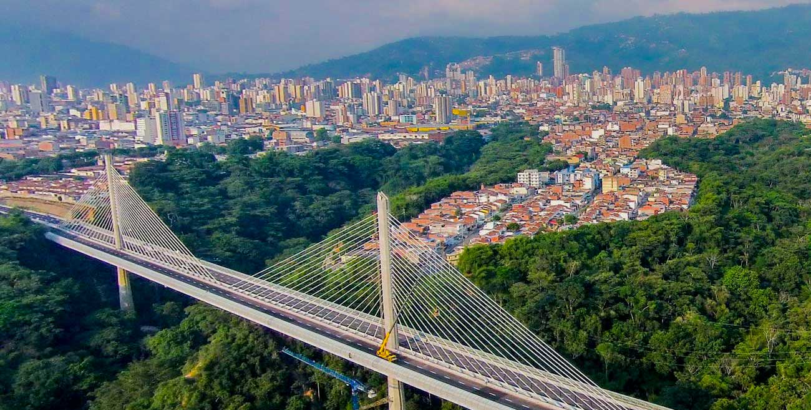
ARTISTAS
Joel Forero
Bucaramanga, conocida como la Ciudad Bonita de Colombia, es la
capital del departamento de Santander. Su ubicación estratégica
en el nororiente del país la convierte en un importante centro
comercial y cultural. Con un clima templado que ronda los 23°C,
la ciudad ofrece una combinación de modernidad y tradición,
reflejada en su arquitectura, parques y espacios históricos.
Bucaramanga es famosa por su amplia oferta gastronómica, donde
destacan platos típicos como el mute santandereano y las
deliciosas hormigas culonas. Además, su desarrollo económico ha
sido impulsado por la industria, el comercio y la educación, con
universidades reconocidas a nivel nacional.
La ciudad también es conocida por su gran cantidad de parques,
lo que le ha valido el título de Ciudad de los Parques. Entre
los más emblemáticos se encuentran el Parque García Rovira, el
Parque del Agua y el Parque San Pío, ideales para disfrutar de
la naturaleza y el aire libre. Bucaramanga forma parte del área
metropolitana junto con Floridablanca, Girón y Piedecuesta, lo
que la convierte en una región dinámica y en constante
crecimiento. Su cercanía a destinos turísticos como el Cañón del
Chicamocha y el Parque Nacional del Santísimo la hacen un lugar
atractivo para visitantes que buscan aventura y cultura